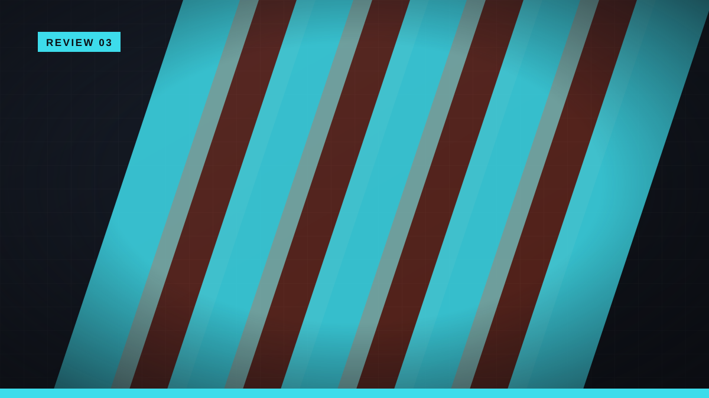

Official PAX West 2025 event page
Fractured Blooms
Repairing a house, growing crops, and cooking meals become unsettling when Angie realizes the day will not stay finished.
- Developer
- Serenity Forge
- Genre
- Psychological Life Sim
- Platforms
- Windows
- At PAX
- Unreleased; date TBA

What it is
Angie restores a neglected house, grows crops, cooks meals, and cares for the people inside it. Those cozy systems operate inside a time loop that gradually changes how each task is understood.
The game is described as inspired by a true story. Its central challenge is tonal: routine must remain satisfying while repetition reveals psychological unease.
What stands out
- Daily play includes house restoration, farming, cooking, and caregiving.
- A time loop turns routine management into the story structure.
- The project is officially described as inspired by a true story.
The three-player read
One game. Three save files.
The Casual
Familiar chores provide a stable way into difficult material.
Life-sim tasks are approachable and predictable. Content framing and pacing matter because the story uses that comfort to carry psychological themes.
The Tactician
Knowledge must become the resource that survives.
A time loop is compelling when each reset changes planning, priorities, or interpretation. Repeating identical chores without new leverage would weaken the structure.
The All-Rounder
This is a life sim for players willing to feel uneasy.
The contrast is the reason to play, not a surprise to hide. A focused runtime and careful disclosures can help it reach the right audience.
Who this game fits
Best for
- Life-sim players open to psychological storytelling
- Narrative players who enjoy learning through repeated days
- Players interested in cozy mechanics used for dramatic contrast
Watch for
- Emotional content and tonal intensity
- Repetition without enough new information
- How sensitively the true-story inspiration is handled
Review basis & sources
Retrospective mini-review based on the game's appearance in official PAX West 2025 event-page materials and official Steam information. It was not separately verified as an Indie MEGABOOTH-branded booth title.